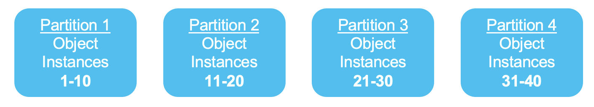
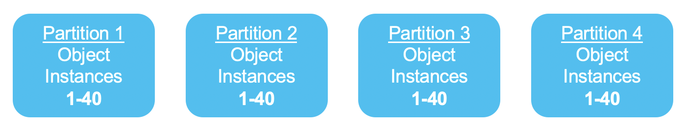
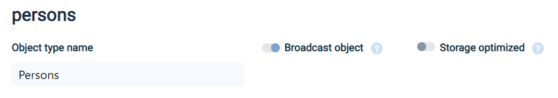
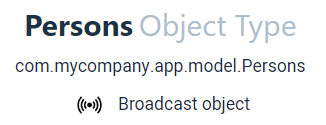

For Stateful PUs, InsightEdge object instances are partitioned across the cluster, by default.
There are two kinds of Space Objects: Standard Space Objects, and Broadcast Objects. They differ in how the data is distributed among the Partitions.
A Standard Object has its data split ("sharded") among the different partitions in the cluster. The sharding process spreads the data between the partitions according to the Object’s routing key. Each piece of data is stored only once, in one of the partitions, and may be duplicated to replica partitions only.

In this example of a Standard Object Type, each partition holds an independent group of Object Instances. Thus, only 1/Nth of the data is located per each of the Processing Unit Instances (N = number of partitions).
A Broadcast Object is a Space Object Type that has its data duplicated among all partitions. Each Object Instance is repeated in every partition. The full object data is located in all Processing Unit instances.

In this example of a Broadcast Object, all 40 of the data items are colocated in all of the Processing Units.
When the data and the code running it are sharing the same JVM, they are colocated. Colocated data access is several orders of magnitudes more efficient due to direct access that doesn’t require serialization, interrupts and network latencies.
A Standard Object makes sense when the data contained by the object is very large, or is frequently updated.
Since a given piece of data is located in only one place (in addition to possibly being located in a backup partition), maintaining data integrity is straightforward. The data is updated once, and all Processing Unit instances will automatically see the same data.
The disadvantage is that since the data is sharded, the code in a particular Processing Unit instance may have to retrieve data that is located in a different Processing Unit instance, which incurs additional overhead. This can be optimized by tuning the routing key.
A Broadcast Object is effective when a relatively small amount of infrequently-updated data is used by many Processing Unit instances (a “read-mostly” scenario).
Because the data is colocated to the code that is processing the data, there is no need to obtain data from a different partition. This reduces data shuffling latency and uses the Broadcast Object as co-located to the code running in the Processing Unit instance.
Replicated data requires a larger memory footprint, thus it is relevant for relatively small tables (of course, the bigger the table, the more memory it will consume in each partition). Replicated data must also be maintained in a consistent state in all the Processing Unit instances where it is deployed. This may require additional system overhead if the data is frequently updated.
The default option for InsightEdge Space Objects is the standard, sharded object.
A Broadcast Object may provide better overall system performance if the following conditions are met:
The data is accessed mostly by read operations (90% or more).
The data is infrequently updated (e.g. twice per day).
The data is accessed by a query or code that is optimized by use of colocated data. A typical situation is a SQL Join using a small, rarely-updated table.
To define a Broadcast Object in Java, add the “broadcast = true” property.
@SpaceClass(broadcast = true)
Public class MyBroadcastEntry {
Public MyBroadcastEntry() {
}
}
SpaceTypeDescriptorBuilder builder = new SpaceTypeDescriptorBuilder(typeName: “MyBroadcastDocument”);
builder.broadcast(true);
builder.create();
A Broadcast Object can be defined using the One-Click Connect feature of Ops Manager by setting the “Broadcast Object” toggle.

When viewing a Broadcast Object in the Object Screen in Ops Manager, it will list it as a Broadcast Object under the Object Name.

Defining a Broadcast Object in .NET Client SDK is not currently supported.
A transaction to write multiple mixed entries (broadcast and non-broadcast) is not allowed,
Explicit routing property, auto generated id, Take and Change are not allowed. Note that Take with null returns only non- broadcast entries.
A transaction that includes an operation that is related to a broadcast table is not supported.
Embedded operations will not propagate to all partitions and should be avoided